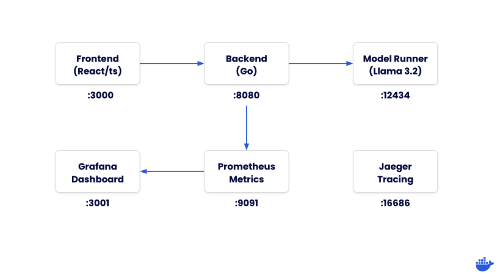
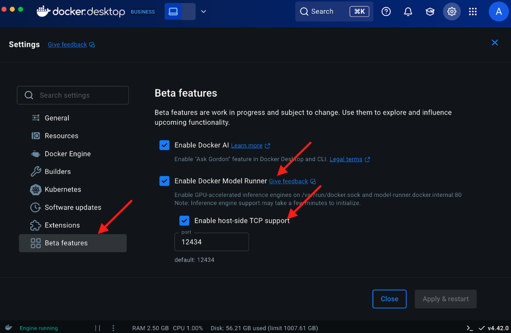
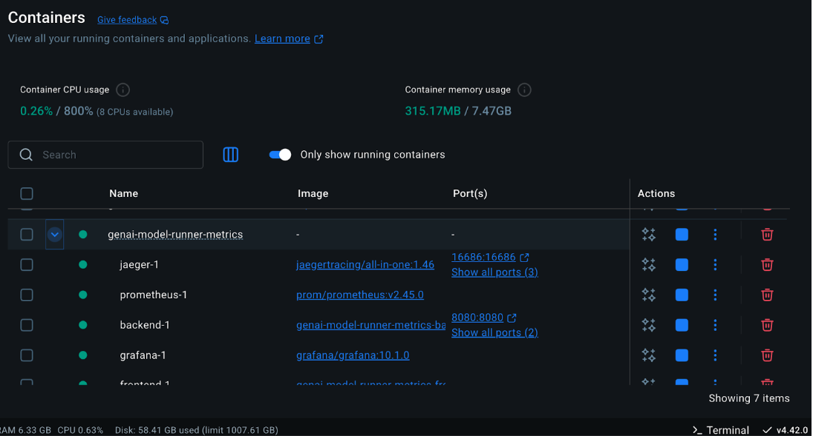
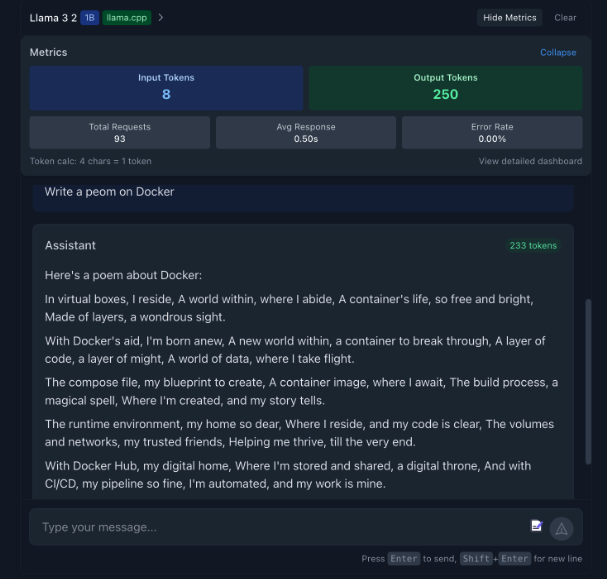
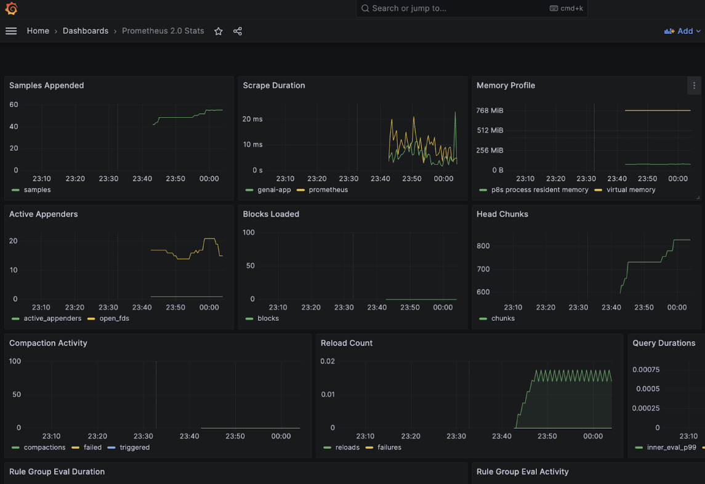
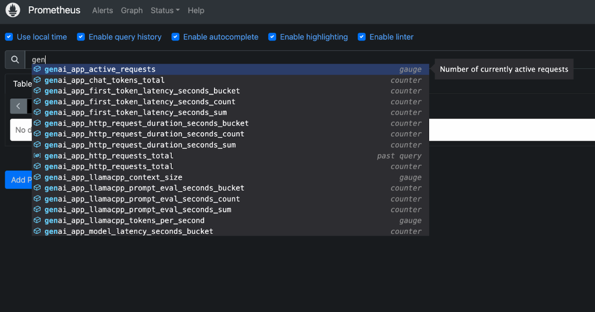

GenAI Chatbot
A modern, full-stack chat application demonstrating how to integrate React frontend with a Go backend and run local Large Language Models (LLMs) using Docker's Model Runner.
This repo also integrates the GenAI app with the Observability stack that includes Prometheus, Grafana and Jaeger.
Overview
This project showcases a complete Generative AI interface that includes:
- React/TypeScript frontend with a responsive chat UI
- Go backend server for API handling
- Integration with Docker's Model Runner to run Llama 3.2 locally
- Comprehensive observability with metrics, logging, and tracing
- llama.cpp metrics integration directly in the UI
Architecture
The application consists of these main components:

Prerequisites
Before we begin, make sure you have:
- Docker Desktop (version 4.40 or newer)
- Docker Model Runner enabled
- At least 16GB of RAM for running AI models efficiently
- Familiarity with Go (for backend development)
- Familiarity with React and TypeScript (for frontend development)
Docker Compose Support for Model Runner
Docker Model Runner can be integrated with Docker Compose to run AI models as part of your multi-container applications. This lets you define and run AI-powered applications alongside your other services.
Compose introduces a new service type called provider that allows you to declare platform capabilities required by your application. For AI models, you can use the model type to declare model dependencies. Here's an example of how to define a model provider:
services:
chat:
image: my-chat-app
depends_on:
- ai_runner
ai_runner:
provider:
type: model
options:
model: ai/smollm2
Notice the dedicated provider attribute in the ai_runner service. This attribute specifies that the service is a model provider and lets you define options such as the name of the model to be used. There is also a depends_on attribute in the chat service. This attribute specifies that the chat service depends on the ai_runner service. This means that the ai_runner service will be started before the chat service to allow injection of model information to the chat service.
Clone the repository
git clone https://github.com/dockersamples/genai-model-runner-metrics
cd genai-model-runner-metrics
Enable Docker Model Runner in Docker Desktop
Go to Settings > Features in Development > Beta tab Enable "Docker Model Runner" Select “Apply and restart”

Download the model
docker model pull ai/llama3.2:1B-Q8_0
Verify the backend.env
BASE_URL=http://localhost:12434/engines/llama.cpp/v1/
MODEL=ai/llama3.2:1B-Q8_0
API_KEY=${API_KEY:-dockermodelrunner}
# Observability configuration
LOG_LEVEL=info
LOG_PRETTY=true
TRACING_ENABLED=true
OTLP_ENDPOINT=jaeger:4318
Start the application using Docker Compose
docker compose up -d --build

You can access the frontend at http://localhost:3000

To access Grafana, use the following address: http://localhost:3001 (admin/admin)

Ensure that you provide http://prometheus:9090 instead of localhost:9090 to see the metrics on the Grafana dashboard.
- Jaeger UI: http://localhost:16686
- Prometheus: http://localhost:9091

How It Works
- The frontend sends chat messages to the backend API
- The backend formats the messages and sends them to the Model Runner
- The LLM processes the input and generates a response
- The backend streams the tokens back to the frontend as they're generated
- The frontend displays the incoming tokens in real-time
- Observability components collect metrics, logs, and traces throughout the process